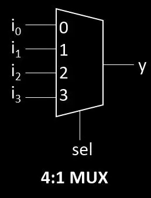

Hard- und Softwaretechnik
| Begriff | Bedeutung |
|---|---|
| A | |
| ADC | Analog-Digital Wandler |
| ALU | Arithmetic Logic Unit (Arithmetisch-logische Einheit) |
| B | |
| BCD | Binary Coded Decimal, Binär System welches nur bis 10 geht (1010) statt bis bis 16 (1111) auch bekannt als 8-4-2-1 Code |
| BIOS | Basic Input Output System (Grundlegendes Eingabe-Ausgabe-System) |
| C | |
| CCS | Combined Charging System (Ladesystem für Elektrofahrzeuge) |
| CMOS | Complementary metal-oxide-semiconductor (diese Schaltungen haben einen grossen Störabstand und kleinen Sromverbrauch da sie auf Unipolaren Transistoren basieren) |
| CPLD | Complex programmable logic device (programmierbare logische Schaltungen) |
| CPU | Central Processing Unit (Zentrale Verarbeitungseinheit) |
| CSS | Cascading Style Sheets (Gestaltungssprache für Webdesign) |
| D | |
| DAC | Digital-Analog Wandler |
| Demux | Demultiplexer |
| DRAM | Dynamic RAM (langsamer und günstiger als SRAM, braucht mehr strom) |
| Dualslope | Verfahren um die Spannung mit einem Dreieck Signal in Zeit umzuwandeln, mit einem Counter entsteht dann ein Digital Signal
|
| E | |
| EEPROM | Electrically Erasable Programmable Read-Only Memory (Elektrisch löschbarer Speicher) ist nicht flüchtig |
| ECL | Emittergekoppelte Logik (verwendet Bipolar Transistoren, ist aber schneller als TTL) |
| EPROM | Erasable Programmable Read-Only Memory (Mit UV-Licht löschbarer Speicher) ist nicht flüchtig |
| F | FILO | First In Last Out, die zuletzt gespeicherte Information wird als erste Information ausgelesen (ist das selbe wie LIFO) |
| Flash | Flash-Speicher (Nichtflüchtiger Speicher) |
| flüchtiger (Speicher) | Speicher wird ohne Speisung gelöscht (z.B. RAM) |
| FPLA | Fieldprogrammable Logic Array (mit x markierte felder sind programmierbar) |
| FPGA | Field Programmable Gate Arrays (AQ → registerd Output, AMUX → unregisterd Output) |
| G | |
| GPU | Graphics Processing Unit (Grafikprozessor) |
| GUI | Graphical user Interface (Grafische Benutzer Oberfläche) |
| H | |
| HDD | Hard Disk Drive (Mechanische Festplatte) |
| HTML | Hypertext Markup Language (Auszeichnungssprache für Webseiten) |
| K | |
| Komplement | Einer Komplement → jedes Bit wird invertiert, Zweier Komplement → einer Komplement + 1 |
| L | |
| LSB | Least Significant Bit (Niederwertigstes Bit) |
| LIFO | Last In First Out, die zuletzt gespeicherte Information wird als erste Information ausgelesen (ist das selbe wie FILO) |
| M | |
| Mux | Multiplexer  |
| MSB | Most Significant Bit (Höchstwertiges Bit) |
| P | |
| PIC | Peripheral Interface Controller (Mikrocontroller-Familie) |
| PLD | Programmable Logic Device (Programmierbare Logikschaltung) |
| R | |
| RAM | Random Access Memory (Flüchtiger Speicher) |
| RISC | Reduced Instruction Set Computer (Rechner mit reduziertem Befehlssatz) |
| ROM | Read-Only Memory (Nur-Lese-Speicher) |
| S | |
| SRAM | Static RAM (schneller und teurer als DRAM) |
| Sukzessive Approxomation | Verfahren für ADC
|
| SSD | Solid State Drive (Halbleiterlaufwerk) |
| Störabstand | Abstand zwischen LOW und HIGH Pegel bei einem Logikbaustein |
| T | |
| TTL | Transistor-Transistor logik (diese Schaltungen haben einen kleinen Störabstand und hohen Sromverbrauch) |
| U | |
| UML | Unified Modeling Language (Objektorientierte Sprache für Spezifizierung, Erstellung, Bearbeitung und Visualisierung) |
| UNIX | Betriebssystemfamilie |
| V | VHDL | VHSIC Hardware Description Language (Hardwarebeschreibungssprache) |
| VLSI | Very Large Scale Integration (Sehr hohe Integrationsdichte) |